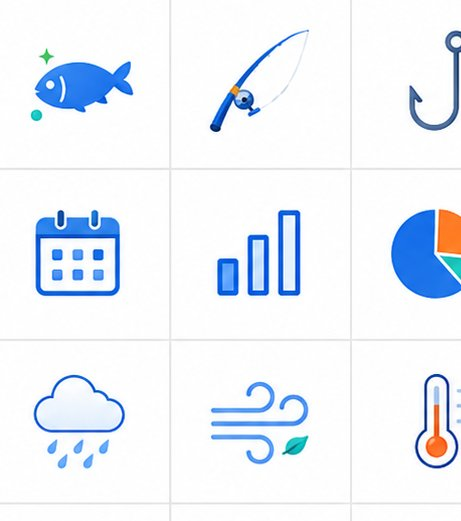
Why Fishing Diary
「なんとなく」を「データ」に。釣果・条件・タックルを記録するほど、あなただけの釣りパターンが見えてきます。
釣果を撮影するだけでAIが魚種を自動判別。面倒な入力を省いてワンタップで記録できます。
潮位・天気・月齢を自動で記録に紐付け。釣果と条件の関係を正確に分析できます。
ロッド・リール・ルアーの組み合わせを学習し、釣果データから最適なタックルを提案します。
過去の記録から、次に釣れやすい最適なポイントとタイミングをスマートに提案します。
Smart Recording
撮影・記録・分析・共有まで。釣りに必要なすべてをワンストップで完結できます。
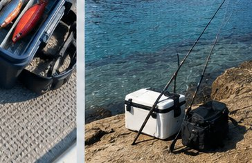
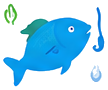
写真を撮るだけで魚種・サイズ・場所・天気を自動入力。記録の手間を限りなくゼロに近づけます。
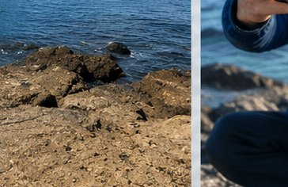
釣果をSNSでシェアしたり、みんなのランキングで腕試し。釣り仲間とのつながりが広がります。
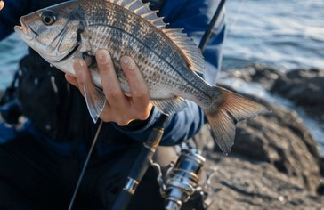
月別・場所別のパフォーマンスをヒートマップで比較。釣れやすい条件がひと目で分かります。
How to use
難しい設定は不要。撮って、記録して、分析するだけ。今日からすぐに始められます。
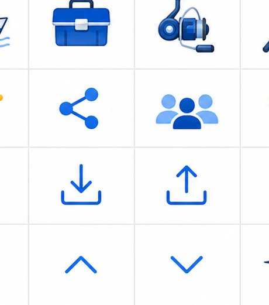
1釣れた魚を撮影するだけ。AIが魚種を判別し、潮位・天気・場所を自動でひも付けます。
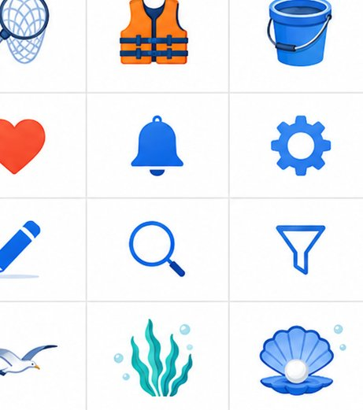
2記録を重ねるほどデータが充実。カレンダー・マップ・統計で釣行を見える化します。
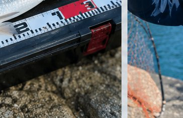
3AIが最適な釣り場・タイミング・タックルを提案。データが次の釣果につながります。
Data Insights
蓄積したデータをグラフ・ヒートマップで分析。あなたの釣果が数字で見えるようになります。
Comparison
記録するだけのアプリではなく、次の釣果へ導く「次世代の釣り日誌」です。
| 機能 | 一般的なアプリ | Fishing Diary |
|---|---|---|
| AI写真で魚種自動判別 | × | ○ |
| 潮見表・気象・月齢の自動連携 | △ | ○ |
| タックル相性AIアドバイス | × | ○ |
| 釣り場スマートレコメンド | × | ○ |
| ヒートマップ・月別比較 | △ | ○ |
| オフライン対応・無料利用 | △ | ○ |
For Everyone
堤防のサビキ釣りから本格的なショアジギングまで。あらゆる釣りスタイルに寄り添います。
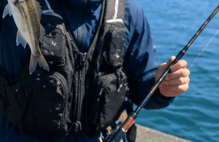
堤防・漁港の釣り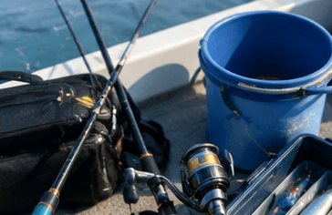
ルアーフィッシング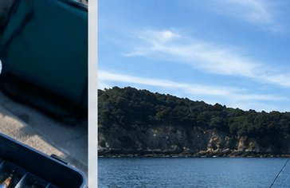
船釣り・沖釣り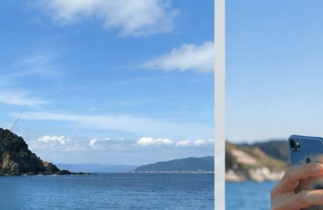
渓流・管理釣り場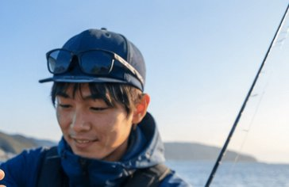
ファミリー釣行FAQ
ご利用前の疑問にお答えします。
はい、登録不要・完全無料でご利用いただけます。釣果記録・分析・マップなど主要機能はすべて無料です。
不要です。ブラウザからすぐに使い始められます。データはお使いの端末内に保存されます。
ご使用のブラウザのローカルストレージに保存されます。サーバーに送信されないためプライバシーも安心です。
ローカルファースト設計のため、電波の届きにくい釣り場でも記録できます。後でデータを確認・分析できます。
データのエクスポート／インポート機能で、別の端末へ記録を引き継げます。
海釣り・川釣り・船釣りなど、あらゆるスタイルに対応。魚種や仕掛けも自由に記録できます。
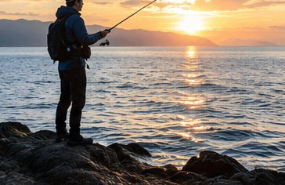